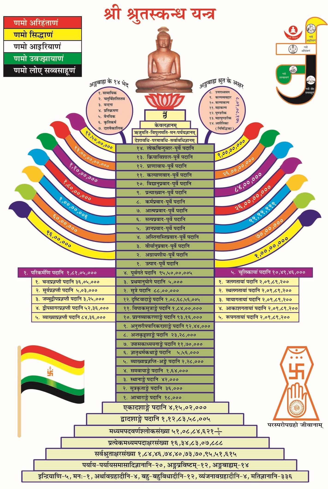

nikkyjain@gmail.com
Date : 29-May-2022
Index

!! श्रीसर्वज्ञवीतरागाय नम: !!
आचार्य-पूज्यपाद-प्रणीत
श्री
समाधितन्त्र
मूल संस्कृत गाथा, श्री प्रभाचंद्र आचार्य द्वारा कृत संस्कृत टीका का हिंदी अनुवाद पं देवेन्द्रकुमार बिजौलियां वाले, श्री क्षु. मनोहर वर्णी द्वारा कृत हिंदी टीका सहित
आभार :
!! नम: श्रीसर्वज्ञवीतरागाय !!
ओंकारं बिन्दुसंयुक्तं नित्यं ध्यायन्ति योगिनः
कामदं मोक्षदं चैव ॐकाराय नमो नम: ॥1॥
अविरलशब्दघनौघप्रक्षालितसकलभूतलकलंका
मुनिभिरूपासिततीर्था सरस्वती हरतु नो दुरितान् ॥2॥
अज्ञानतिमिरान्धानां ज्ञानाञ्जनशलाकया
चक्षुरुन्मीलितं येन तस्मै श्रीगुरवे नम: ॥3॥
॥ श्रीपरमगुरुवे नम:, परम्पराचार्यगुरुवे नम: ॥
सकलकलुषविध्वंसकं, श्रेयसां परिवर्धकं, धर्मसम्बन्धकं, भव्यजीवमन: प्रतिबोधकारकं, पुण्यप्रकाशकं, पापप्रणाशकमिदं शास्त्रं श्री-समाधितंत्र नामधेयं, अस्य मूल-ग्रन्थकर्तार: श्री-सर्वज्ञ-देवास्तदुत्तर-ग्रन्थ-कर्तार: श्री-गणधर-देवा: प्रति-गणधर-देवास्तेषां वचनानुसार-मासाद्य आचार्य श्री-पूज्यपाद-देव विरचितं ॥
॥ श्रोतार: सावधानतया शृणवन्तु ॥
मंगलं भगवान् वीरो मंगलं गौतमो गणी
मंगलं कुन्दकुन्दार्यो जैनधर्मोऽस्तु मंगलम् ॥
सर्वमंगलमांगल्यं सर्वकल्याणकारकं
प्रधानं सर्वधर्माणां जैनं जयतु शासनम् ॥
येनात्माऽबुध्यतात्मैव परत्वेनैव चापरम्
अक्षयानन्तबोधाय तस्मै सिद्धात्मने नम: ॥1॥
Meaning : I pay obeisance to the Siddhas , who knew the self to be self, and the non-self to be non-self and who personify indestructible and eternal knowledge.
जयन्ति यस्यावदतोऽपि भारती-
विभूतयस्तीर्थकृतोप्यनीहितुः ।
शिवाय धात्रे सुगताय विष्णवे
जिनाय तस्मै सकलात्मने नमः ॥2॥
Meaning : Despite being a fordmaker, you are free from all desire. Even though you do not speak, the glory of your teachings is enduring. You are Śiva, DhAtra, Sugata and ViShNu - you are a Jina. I bow to you, and to all enlightened souls.
श्रुतेन लिङ्गेन यथात्मशक्ति समाहितान्त:करणेन सम्यक्
समीक्ष्य कैवल्यसुखस्पृहाणां विविक्तमात्मानमथाभिधास्ये ॥3॥
Meaning : I shall now relate the pure self, distinct from all else, on the basis of the scriptures, to the best of my ability and experience, with complete concentration and after thoroughly reflecting upon it, for those who seek the bliss of omniscience.
बहिरन्त: परश्चेति त्रिधात्मा सर्वदेहिषु
उपेयात्तत्र परमं मध्योपायाद् बहिस्त्यजेत् ॥4॥
Meaning : There are three kinds of self in all living beings, bahirAtmA , antarAtmA and paramAtmA . One ought to give up the external self, And approach the transcendental self Through the internal self.
बहिरात्मा शरीरादौ जातात्मभ्रान्तिरान्तर:
चित्तदोषात्मविभ्रान्ति:, परमात्माऽतिनिर्मल: ॥5॥
Meaning : BahirAtmA confusedly identifies himself with his body. AntarAtmA does not confuse his body with his soul. ParamAtmA is absolutely flawless.
निर्मल: केवल: शुद्धो विविक्त: प्रभुरव्यय:
परमेष्ठी परात्मेति परमात्मेश्वरो जिन: ॥6॥
Meaning : Thus, the paramAtmA is absolutely flawless. He is unique, immaculate, unmixed with insentient matter, He is the almighty. He is imperishable. He is the ultimate benefactor, the transcendental soul, The Lord and supreme victor.
बहिरात्मेन्द्रियद्वारै - रात्मज्ञानपराङ्मुख:
स्फुरित: स्वात्मनो देहमात्मत्वेनाध्यवस्यति ॥7॥
Meaning : The bahirAtmA keeps the doors of sensual desire open at all times constantly distracted by them. He is disinterested in spiritual knowledge and considers his body to be his soul.
नरदेहस्थमात्मान - मविद्वान् मन्यते नरम्
तिर्यञ्चं तिर्यगङ्गस्थं सुराङ्गस्थं सुरं तथा ॥8॥
नारकं नारकाङ्गस्थं न स्वयं तत्त्वतस्तथा
अनन्तानन्तधीशक्ति: स्वसंवद्योऽचलस्थिति: ॥9॥
Meaning : BahirAtmA believes that the soul changes according to the body it occupies. Thus, he considers the soul residing in a human body to be human, The soul living in a sub-human body to be subhuman, And the soul endowed with a celestial being's body to be a celestial being.
BahirAtmA believes that the soul residing in the body of a hellish being is a hellish being. But this is not in accordance with reality. In truth, the soul possesses infinite knowledge and power, can only be experienced and is constant .
स्वदेहसदृशं दृष्ट्वा परदेहमचेतनम्
परात्माधिष्ठितं मूढ: परत्वेनाध्यवस्यति ॥10॥
Meaning : Because the bahirAtmA believes that his body is his soul, he looks at the body of another, which is similar to his own, and thinks of the body of another person to be his soul.
स्वपराध्यवसायेन देहेष्वविदितात्मनाम्
वर्तते विभ्रम: पुंसां पुत्रभार्यादिगोचर: ॥11॥
Meaning : Owing to confusion regarding what belongs to the soul and what does not, a bahirAtmA believes that his body belongs to his soul. To such a person, other souls appear to be his son, wife, et cetera.
अविद्यासंज्ञितस्तस्मात् संस्कारो जायते दृढ:
येन लोकोऽङ्गमेव स्वं पुनरप्यभिमन्यते ॥12॥
Meaning : This false identification of the body with the soul leads to avidyA . Therefore, one develops the sanskAra of identifying with the body, in this life and hereafter.
देहे स्वबुद्धिरात्मानं युनक्त्येतेन निश्चयात्
स्वात्मन्येवात्मधीस्तस्माद्वियोजयति देहिनम् ॥13॥
Meaning : One with false predilection associates the soul with the body. Inevitably, he distances himself from the true understanding of the soul owing to his incorrect beliefs.
देहेष्वात्मधिया जाता: पुत्रभार्यादिकल्पना:
सम्पत्तिमात्मनस्ताभि र्मन्यते हा हतं जगत् ॥14॥
Meaning : Because we identify with our bodies, we identify others with their bodies and imagine them to be our son, wife, et cetera based on their physical proximity. It is indeed regrettable that we identify not only with our bodies, but with others' as well. This is the tragedy of sansAra.
मूलं संसारदु:खस्य देह एवात्मधीस्तत:
त्यक्त्त्वैनां प्रविशेदन्त - र्बहिरव्यापृतेन्द्रिय: ॥15॥
Meaning : The key to all worldly suffering is our identification with the body. Hence, we should give up identifying with the body, stop our senses from straying towards external stimuli, and look inward.
मत्तश्च्युत्वेन्द्रियद्वारै: पतितो विषयेष्वहम्
तान् प्रपद्याऽहमिति मां पुरा वेद न तत्त्वत: ॥16॥
Meaning : I had lost sight of my true self, and was wallowing in the filth of sensual desire. I obtained the object of my sensual desires, but never understood the true nature of my self.
एवं त्यक्त्वा बहिर्वाचं त्यजेदन्तरशेषत:
एष योग: समासेन प्रदीप: परमात्मन: ॥17॥
Meaning : Bring to a halt all conversations with others and within yourself. This is, in brief, the method of illuminating the ultimate self.
यन्मया दृश्यते रूपं तन्न जानाति सर्वथा
जानन्न दृश्यते रूपं तत: केन ब्रवीम्यहम् ॥18॥
Meaning : That which I can see, has no consciousness. That which has consciousness, cannot be seen. So whom do I converse with?
यत्परै: प्रतिपाद्योऽहं यत्परान् प्रतिपादये
उन्मत्तचेष्टितं तन्मे यदहं निर्विकल्पक: ॥19॥
Meaning : Can the ultimate reality be explained to others in words? What I explain to others, is like the ravings of a madman. Because the nature of the soul is truly inexpressible.
यदग्राह्यं न गृह्णाति गृहीतं नैव मुञ्चति
जानाति सर्वथा सर्वं तत्स्वसंवेद्यमस्म्यहम् ॥20॥
Meaning : I am the soul. I can only be experienced by myself. I do not accept that which is not mine. I do not cease to be what I am. I am omniscient.
उत्पन्नपुरुषभ्रान्ते: स्थाणौ यद्वद्विचेष्टितम्
तद्वन्मे चेष्टितं पूर्वं देहादिष्वात्मविभ्रमात् ॥21॥
Meaning : Just as one may mistake a pillar for a man, one mistakes the body for the soul.
यथासौ चेष्टते स्थाणौ निवृत्ते पुरुषाग्रहे
तथा चेष्टोऽस्मि देहादौ विनिवृत्तात्मविभ्रम: ॥22॥
Meaning : One who does not mistake a pillar for a man, stops mistaking the body for the soul. He then conducts himself appropriately.
येनात्मनाऽनुभूयेऽह - मात्मनैवात्मनाऽऽत्मनि
सोऽहं न तन्न सा नासौ नैको न द्वौ न वा बहु: ॥23॥
Meaning : I am that pure consciousness which experiences my true self. I am supreme awareness, beyond the pale of gender and numbers.
यदभावे सुषुप्तोऽहं यद्भावे व्युत्थित: पुन:
अतीन्द्रियमनिर्देश्यं तत्स्वसंवेद्यमस्म्यहम् ॥24॥
Meaning : I am that innate self without experiencing which, I was asleep, and on experiencing which, I am fully awake. I am beyond sensual perception, beyond intellectual explanation. I can only be experienced.
क्षीयन्तेऽत्रैव रागाद्यास्तत्त्वतो मां प्रपश्यत:
बोधात्मानं तत: कश्चिन्न मे शत्रुर्न च प्रिय: ॥25॥
Meaning : My attachment and aversion are stilled, and I perceive myself from the absolute point of view. Hence, I have neither foes nor friends.
मामपश्यन्नयं लोको न मे शत्रुर्न च प्रिय:
मां प्रपश्यन्नयं लोको न मे शत्रुर्न च प्रिय: ॥ 26॥
Meaning : Those who cannot see the real me, are neither friends nor foes. Those who can see the real me, are neither friends nor foes.
त्यक्त्वैवं बहिरात्मान - मन्तरात्मव्यवस्थित:
भावयेत् परमात्मानं सर्वसङ्कल्पवर्जितम् ॥27॥
Meaning : Give up the bahirAtmA , remain in the antarAtmA and concentrate fully on the paramAtmA , without any extraneous goals or desires.
सोऽहमित्यात्तसंस्कारस्तस्मिन् भावनया पुन:
तत्रैव दृढसंस्काराल्लभते ह्यात्मनि स्थितिम् ॥28॥
Meaning : Because of concentrating fully on the paramAtmA , you acquire a transformative thought, that you too are a paramAtmA .
मूढात्मा यत्र विश्वस्तस्ततो नान्यद्भयास्पदम्
यतो भीतस्ततो नान्यदभयस्थानमात्मन: ॥29॥
Meaning : Nothing should be feared more than what the fool trusts the most. And nothing is safer than what is most greatly feared by the fool.
सर्वेन्द्रियाणि संयम्य स्तिमितेनान्तरात्मना
यत्क्षणं पश्यतो भाति तत्तत्त्वं परमात्मन: ॥30॥
Meaning : The true nature of the transcendental self can be experienced by one who has stilled his senses and stabilised himself. Whatever becomes visible to him, even for an instant, is the essence of the supreme self.
य: परात्मा स एवाऽहं योऽहं स परमस्तत:
अहमेव मयोपास्यो नान्य:कश्चिदिति स्थिति: ॥31॥
Meaning : Whatever is the supreme soul, that is me. Whatever I am, is the supreme soul. Therefore, I can only contemplate upon my soul and not on anything else. This is the reality.
प्रच्याव्य विषयेभ्योऽहं मां मयैव मयि स्थितम्
बोधात्मानं प्रपन्नोऽस्मि परमानन्दनिर्वृतम् ॥32॥
Meaning : I withdrawing myself from the objects of sensual desire, stabilise myself in my inner self and attain my transcendental self which flows with the supreme bliss of true knowledge.
यो न वेत्ति परं देहादेवमात्मानमव्ययम्
लभते स न निर्वाणं तप्त्वाऽपि परमं तप: ॥33॥
Meaning : He who does not understand the soul as being different from the body, as explained above, cannot attain liberation despite carrying out the most intense ascetic practices.
आत्मदेहान्तरज्ञान - जनिताह्लादनिर्वृत:
तपसा दुष्कृतं घोरं भुञ्जानोऽपि न खिद्यते ॥34॥
Meaning : One who has realised that his soul is distinct from the body, transcends all body related pain, for he has ceased to identify with it. He can practise the most extreme penance in mitigation of past sins and yet feel blissful, for he is immersed in his self.
रागद्वेषादिकल्लोलैरलोलं यन्मनोजलम्
स पश्यत्यात्मनस्तत्त्वं तत् तत्त्वं नेतरो जन: ॥35॥
Meaning : One sees the true nature of the soul only when the waters of the mind are not agitated by massive waves of attachment and aversion. Only such a person understands himself as well as the whole world, no one else.
अविक्षिप्तं मनस्तत्त्वं विक्षिप्तं भ्रान्तिरात्मन:
धारयेत्तदविक्षिप्तं विक्षिप्तं नाश्रयेत्तत: ॥36॥
Meaning : The tranquil mind is the true nature of the self. The perturbed mind is caused by a false understanding of the self. Take the shelter of the tranquil mind, never of the perturbed mind.
अविद्याभ्याससंस्कारै - रवशं क्षिप्यते मन:
तदेवज्ञानसंस्कारै: स्वतस्तत्त्वेऽवतिष्ठते ॥37॥
Meaning : The mind that has imbibed delusion and nescience is tossed about helplessly. The mind which has imbibed true knowledge is steadfastly immersed in its true self.
अपमानादयस्तस्य विक्षेपो यस्य चेतस:
नापमानादयस्तस्य न क्षेपो यस्य चेतस: ॥38॥
Meaning : The disturbed mind is susceptible to insult and flattery. The calm collected mind is inured to the behaviour of others.
यदा मोहात्प्रजायेते रागद्वेषौ तपस्विन:
तदैव भावयेत्स्वस्थमात्मानं शाम्यत: क्षणात् ॥39॥
Meaning : Whenever the feelings of attachment and aversion rise in the mind of the ascetic because of latent delusion, he should immediately compose himself by immersing himself in his soul.
यत्र काये मुने: प्रेम तत: प्रच्याव्य देहिनम्
बुद्ध्या तदुत्तमे काये योजयेत्प्रेम नश्यति ॥40॥
Meaning : If a monk feels love and attachment towards his body, he should get shed his deluded sense of identity with the corporeal form and use his wisdom to connect with the supreme body . His attachment for the corporal body shall be destroyed.
आत्म - विभ्रमजं दु:खमात्मज्ञानात्प्रशाम्यति
नाऽयतास्तत्र निर्वान्ति कृत्वाऽपि परमं तप: ॥41॥
Meaning : Knowledge of the self quells the suffering caused by not knowing the self. Those who do make focused efforts to know the self, shall not attain liberation no matter how much penance they carry out.
शुभं शरीरं दिव्यांश्च विषयानभिवाञ्छति
उत्पन्नाऽऽत्ममतिर्देहे तत्त्वज्ञानी ततश्च्युतिम् ॥42॥
Meaning : One who identifies with the body seeks an attractive physique and the highest degree of sensual pleasures. One who identifies with his soul seeks freedom from the body and its desires.
परत्राहम्मति: स्वस्माच्च्युतो बध्नात्यसंशयम्
स्वस्मिन्नहम्मतिश्च्युत्वा परस्मान्मुच्यते बुध: ॥43॥
Meaning : One who identifies with others undoubtedly falls from the self and binds karmas. But the wise ones remain in the self, shed the other and attain liberation.
दृश्यमानमिदं मूढिलिङ्गमवबुध्यते
इदमित्यवबुद्धस्तु निष्पन्नं शब्दवर्जितम्॥ 44॥
Meaning : The ignorant one sees a person in terms of appearance and gender the enlightened one sees the soul which is complete and beyond words.
जानन्नप्यात्मनस्तत्त्वं विविक्तं भावयन्नपि
पूर्वविभ्रमसंस्काराद् भ्रान्तिं भूयोऽपि गच्छति ॥45॥
Meaning : Despite knowing the nature of the soul and its distinctness from the body the yogI can be misled because of earlier conditioning.
अचेतनमिदं दृश्यमदृश्यं चेतनं तत:
क्व रुष्यामि क्व तुष्यामि मध्यस्थोऽहं भवाम्यत: ॥46॥
Meaning : When I cannot see the sentient ones, and the ones I can see are insentient, whom should I be pleased with or annoyed with? Hence I remain equanimous.
त्यागादाने बहिर्मूढ: करोत्यध्यात्ममात्मवित्
नान्तर्बहिरुपादानं न त्यागो निष्ठितात्मन: ॥47॥
Meaning : The bahirAtman accepts or abandons objects of the outer world. The antarAtman accepts or abandons objects of the spiritual world. The paramAtman neither accepts nor abandons any object.
युञ्जीत मनसाऽऽत्मानं वाक्कायाभ्यां वियोजयेत्
मनसा व्यवहारं तु त्यजेद्वाक्काययोजितम् ॥48॥
Meaning : Immerse your mind in the soul, renouncing all conduct of speech and body. Detach your soul from verbal and physical activities.
जगद्देहात्मदृष्टीनां विश्वास्यं रम्यमेव च
स्वात्मन्येवात्मदृष्टीनां क्व विश्वास: क्व वा रति: ॥49॥
Meaning : Those who think that the body is their self trust and enjoy the external world. But those who are immersed in their souls realise that the soul and body are different and there is nothing trustworthy or enjoyable in the external world.
आत्मज्ञानात्परं कार्यं न बुद्धौ धारयेच्चिरम्
कुर्यादर्थवशात्किञ्चिद्वाक्कायाभ्यामतत्पर: ॥50॥
Meaning : Do not pay attention to any task which distracts you from self-realisation. Only under dire necessity should one indulge in dealings with the external world, and that too, only through acts of speech and body.
यत्पश्यामीन्द्रियैस्तन्मे नास्ति यन्नियतेन्द्रिय:
अन्त: पश्यामि सानन्दं तदस्तु ज्योतिरुत्तमम् ॥51॥
Meaning : I am not that which I perceive with the senses. I am that supreme blissful light which is perceived when I control my senses and I look inwards.
सुखमारब्धयोगस्य बहिर्दु:खमथात्मनि
बहिरेवाऽसुखं सौख्यमध्यात्मं भावितात्मन: ॥52॥
Meaning : Newcomers to the path of meditation are conditioned to feel happiness in the objects of the senses and find spiritual contemplation to be a chore. But accomplished yogIs who realise that there is no pleasure in external objects find the external world to be bereft of happiness and spiritual contemplation to be full of joy.
तद् ब्रूयात्तत्परान् पृच्छेत्तदिच्छेत्तत्परो भवेत्
येनाऽविद्यामयं रूपं त्यक्त्वा विद्यामयं व्रजेत् ॥53॥
Meaning : He who desires spiritual perfection ought to discuss, seek information on, desire and immerse himself in that which shall remove his nescience and bring him true wisdom.
शरीरे वाचि चात्मानं सन्धत्ते वाक्शरीरयो:
भ्रान्तोऽभ्रान्त: पुनस्तत्त्वं पृथगेषां निबुध्यते ॥54॥
Meaning : The confused person confuses the soul with speech and body, but the unperplexed person knows that all three are different.
न तदस्तीन्द्रियार्थेषु यत्क्षेमङ्करमात्मन:
तथापि रमते बालस्तत्रैवाज्ञानभावनात् ॥55॥
Meaning : The feeling of bliss enjoyed by a yogI is not caused by the senses; despite that, because of ignorance, childish people chase sensuous pleasure.
चिरं सुषुप्तास्तमसि मूढात्मान: कुयोनिषु
अनात्मीयात्मभूतेषु ममाहमिति जाग्रति ॥56॥
Meaning : Since beginningless time, owing to the darkness of ignorance, deluded people keep taking birth in various realms identifying with and considering external objects to be theirs. This is the extent of their awareness, they are asleep to the existence of their soul.
पश्येन्निरन्तरं देहमात्मनोऽनात्मचेतसा
अपरात्मधियाऽन्येषामात्मतत्त्वे व्यवस्थित: ॥57॥
Meaning : , one should remain soundly immersed in one's soul, perceive one's body as not belonging to one, and ought to also perceive the bodies of others as being different from their souls.
अज्ञापितं न जानन्ति यथा मां ज्ञापितं तथा
मूढात्मानस्ततस्तेषां वृथा मे ज्ञापनश्रम: ॥58॥
Meaning : Deluded souls cannot comprehend the unexplained true nature of the soul on their own, nor can they comprehend it when it is explained to them. Hence, it useless to make the effort of explaining it to them.
यद्बोधयितुमिच्छामि तन्नाहं यदहं पुन:
ग्राह्यं तदपि नान्यस्य तत्किमन्यस्य बोधये ॥59॥
Meaning : I am not that which I am trying to explain. What I am , cannot be understood by others. So what could I possibly explain to them?
बहिस्तुष्यति मूढात्मा पिहितज्योतिरन्तरे
तुष्यत्यन्त: प्रबुद्धात्मा बहिव्र्यावृत्तकौतुक: ॥60॥
Meaning : One whose light of knowledge is dimmed, is satisfied with external objects. But one who is spiritually awakened, has no curiosity for the external world; his inner state fills him with joy.
न जानन्ति शरीराणि सुखदु:खान्यबुद्धय:
निग्रहानुग्रहधियं तथाप्यत्रैव कुर्वते ॥61॥
Meaning : Bodies know not pain or pleasure! but the deluded ones base their perception of pleasure and pain, on their bodily states.
स्वबुद्ध्या यावद् गृह्णीयात् कायवाक्चेतसां त्रयम्
संसारस्तावदेतेषां भेदाभ्यासे तु निर्वृति: ॥62॥
Meaning : One remains in sansAra till the time one identifies with one's body, speech and mind. One is liberated once one stops feeling oneness with the body.
घने वस्त्रे यथाऽऽत्मानं न घनं मन्यते तथा
घने स्वदेहेऽप्यात्मानं न घनं मन्यते बुध: ॥63॥
जीर्णे वस्त्रे यथाऽऽत्मानं न जीर्णं मन्यते तथा
जीर्णे स्वदेहेऽप्यात्मानं न जीर्णं मन्यते बुध: ॥64॥
नष्टे वस्त्रे यथाऽऽत्मानं न नष्टं मन्यते तथा
नष्टे स्वदेहेऽप्यात्मानं न नष्टं मन्यते बुध: ॥65॥
रक्ते वस्त्रे यथाऽऽत्मानं न रक्तं मन्यते तथा
रक्ते स्वदेहेऽप्यात्मानं न रक्तं मन्यते बुध: ॥66॥
Meaning : Just as a man wearing thick clothes does not consider himself to have become thick, similarly, the wise ones do not consider themselves as being fat even when their body becomes fat.
Just as a man wearing old clothes does not consider himself to have become old, similarly, the wise ones do not consider themselves as being old even when their body becomes old.
Just as a man wearing torn clothes does not consider himself to have become torn, similarly, the wise ones do not consider themselves as being torn even when their body becomes torn/damaged.
Just as a man wearing red clothes does not consider himself to have become red, similarly, the wise ones do not consider themselves as being red even when their body becomes red.
यस्य सस्पन्दमाभाति नि:स्पन्देन समं जगत्
अप्रज्ञमक्रियाभोगं स शमं याति नेतर: ॥67॥
Meaning : Only he attains inner peace, to whom this vibrant and pulsating world seems as dull as an insentient object, without any activity or delectation.
शरीरकञ्चुकेनात्मा संवृतज्ञानविग्रह:
नात्मानं बुध्यते तस्माद् भ्रमत्यतिचिरं भवे ॥68॥
Meaning : The soul lies inside the cloak of the body . Ignorant beings fail to realise the existence of their soul which embodies knowledge and hence keep wandering in the ocean of transmigration.
प्रविशद्गलतां व्यूहे देहेऽणूनां समाकृतौ
स्थितिभ्रान्त्या प्रपद्यन्ते तमात्मानमबुद्धय: ॥69॥
Meaning : The body is made up of atoms and molecules that are constantly in a state of flux. It is impermanent. But deluded persons consider the body to be constant and permanent and hence, think of it as their soul.
गौर: स्थूल: कृशो वाऽहमित्यङ्गेनाविशेषयन्
आत्मानं धारयेन्नित्यं केवलज्ञप्तिविग्रहम् ॥70॥
Meaning : Think not that you are fair-skinned, obese or slim, for these are qualities of the body. You are the soul, which has the attribute of knowledge .
मुक्तिरेकान्तिकी तस्य चित्ते यस्याचला धृति:
तस्य नैकान्तिकी मुक्तिर्यस्य नास्त्यचला धृति: ॥71॥
Meaning : For one possessed of unwavering mind and unflagging determination, liberation is certain. For one whose mind is wavering and whose determination is weak, liberation is doubtful.
जनेभ्यो वाक् तत: स्पन्दो मनसश्चित्तविभ्रमा:
भवन्ति तस्मात्संसर्गं जनैर्योगी ततस्त्यजेत् ॥72॥
Meaning : When you meet people, you talk. When you talk, your mind is distracted. Therefore, the yogI should stay away from people .
ग्रामोऽरण्यमिति द्वेधा निवासोऽनात्मदर्शिनाम्
दृष्टात्मनां निवासस्तु विविक्तात्मैव निश्चल: ॥73॥
Meaning : Those who have not realised their souls, live in either one of two places, village or forest. Those who realised their souls, reside in their immovable pure soul.
देहान्तरगतेर्बीजं देहेऽस्मिन्नात्मभावना
बीजं विदेहनिष्पत्तेरात्मन्येवात्मभावना ॥74॥
Meaning : The seeds of rebirth lie in identifying with the body. The seeds of liberation lie in identifying only with the soul.
नयत्यात्मानमात्मैव जन्म निर्वाणमेव च
गुरुरात्मात्मनस्तस्मान्नान्योऽस्ति परमार्थत: ॥75॥
Meaning : The soul takes itself to rebirth or liberation. Hence, from the absolute viewpoint, the soul is its own guru and needs no other.
दृढात्मबुद्धिर्देहादावुत्पश्यन्नाशमात्मन:
मित्रादिभिर्वियोगं च बिभेति मरणाद् भृशम् ॥76॥
Meaning : Physical decay and the loss of friends and loved ones through death, makes one who is strongly convinced that his body is his identity, greatly fear death.
आत्मन्येवात्मधीरन्यां शरीरगतिमात्मन:
मन्यते निर्भयं त्यक्त्वा वं वान्तरग्रहम् ॥77॥
Meaning : One who firmly believes that his soul is his identity is fearless. He knows that the body is a distinct external substance; the changing of one set of clothes for another.
व्यवहारे सुषुप्तो य: स जागत्र्यात्मगोचरे
जागर्ति व्यवहारेऽस्मिन् सुषुप्तश्चात्मगोचरे ॥78॥
Meaning : One who is asleep to the external world, is awake to his inner consciousness. One who is awake to the world around him, is unaware of his own soul.
आत्मानमन्तरे दृष्ट्वा दृष्ट्वा देहादिकं बहि:
तयोरन्तरविज्ञानादभ्यासादच्युतो भवेत् ॥79॥
Meaning : Perceive the soul to be you, and the body to be distinct from you. Internalise this bheda vijnAna and attain liberation.
पूर्वं दृष्टात्मतत्त्वस्य विभात्युन्मत्तवज्जगत्
स्वभ्यस्तात्मधिय: पश्चात् काष्ठपाषाणरूपवत् ॥80॥
Meaning : To the freshly realised soul, this external world first appears like the frenzied activity of a madman.
शृण्वन्नप्यन्यत: कामं वदन्नपि कलेवरात्
नात्मानं भावयेद्भिन्नं यावत्तावन्न मोक्षभाक् ॥81॥
Meaning : Despite hearing of it constantly from others, despite speaking about it oneself, unless one experiences the soul to be different from the body, one cannot be a candidate for liberation.
तथैव भावयेद्देहाद् व्यावृत्यात्मानमात्मनि
यथा न पुनरात्मानं देहे स्वप्नेऽपि योजयेत् ॥82॥
Meaning : Take away your attention from the body, and completely immerse your consciousness in your own soul until you imbibe such complete identification with your soul that you shall not identify with your body even in your dreams.
अपुण्यमव्रतै: पुण्यं व्रतैर्मोक्षस्तयोव्र्यय:
अव्रतानीव मोक्षार्थी व्रतान्यपि ततस्त्यजेत् ॥83॥
Meaning : Not following the vows leads to sin. Following the vows leads to merit. One seeking liberation must give up both, sin and merit for liberation can only be attained by the destruction of both.
अव्रतानि परित्यज्य व्रतेषु परिनिष्ठित:
त्यजेत्तान्यपि संप्राप्य परमं पदमात्मन: ॥84॥
Meaning : Give up vowlessness by following the vows with great sincerity. Once you attain supreme purity of the soul, give up the vows.
यदन्तर्जल्पसंपृक्तमुत्प्रेक्षाजालमात्मन:
मूलं दु:खस्य तन्नाशे शिष्टमिष्टं परं पदम् ॥85॥
Meaning : The root cause of misery is the conversation inside your head as it grapples with various desires. You attain the desired supreme state of the soul only when this internal cacophony ceases.
अव्रती व्रतमादाय व्रती ज्ञानपरायण:
परात्मज्ञानसम्पन्न: स्वयमेव परो भवेत् ॥86॥
Meaning : The vowless should seek the shelter of the ascetic vows. Those who follow these vows should develop spiritual knowledge. The votary who has attained the highest spiritual knowledge effortlessly becomes the supreme transcendental soul .
लिङ्गं देहाश्रितं दृष्टं देह एवात्मनो भव:
न मुच्यन्ते भवात्तस्मात्ते ये लिङ्गकृताऽऽग्रहा: ॥87॥
Meaning : Physical insignia is dependent on the body. The body keeps the soul in sansAra. Hence, those who focus on the body, cannot attain liberation.
जातिर्देहाश्रिता दृष्टा देह एवात्मनो भव:
न मुच्यन्ते भवात्तस्मात्ते ये जातिकृताग्रहा: ॥88॥
Meaning : Caste pertains to the body. The body keeps the soul in sansAra. Those who continue to identify with the body like caste and creed, race and gender, cannot attain liberation.
जातिलिङ्गविकल्पेन येषां च समयाग्रह:
तेऽपि न प्राप्नुवन्त्येव परमं पदमात्मन: ॥89॥
Meaning : Those who cling to conventional understanding based on bodily characteristics such as caste and gender, cannot reach the supreme state of the soul.
यत्त्यागाय निवर्तन्ते भोगेभ्यो यदवाप्तये
प्रीतिं तत्रैव कुर्वन्ति द्वेषमन्यत्र मोहिन: ॥90॥
Meaning : Despite having forsaken all external sensual delectation, in order to be free from the body and attain liberation, deluded people hanker after the objects of the senses and feel contempt for the supreme state .
अनन्तरज्ञ: सन्धत्ते दृष्टिं पङ्गोर्यथान्धके
संयोगात् दृष्टिमङ्गेऽपि सन्धत्ते तद्वदात्मन: ॥91॥
Meaning : On seeing a blind man and a handicapped man move together , and not knowing that they were separate, the deluded think that the blind man has vision. In the same way, the deluded assume that the body has consciousness.
दृष्टभेदो यथा दृष्टिं पङ्गोरन्धे न योजयेत्
तथा न योजयेद् देहे दृष्टात्मा दृष्टिमात्मन: ॥92॥
Meaning : Just as one who has discriminative knowledge does not impute the immobile person's vision to the blind man; Similarly, one who has discriminative knowledge does not ascribe the soul's sentience to the body.
सुप्तोन्मत्ताद्यवस्थैव विभ्रमोऽनात्मदर्शिनाम्
विभ्रमोऽक्षीणदोषस्य सर्वावस्थाऽऽत्मदर्शिन: ॥93॥
Meaning : One who has not perceived his soul considers only those who are sleeping or intoxicated to be befuddled. However, one who has perceived his soul but not yet rid himself of the subtle flaws, finds all aspects of worldly life bewildering.
विदिताशेषशास्त्रोऽपि न जाग्रदपि मुच्यते
देहात्मदृष्टिर्ज्ञातात्मा सुप्तोन्मत्तोऽपि मुच्यते ॥94॥
Meaning : One who thinks that the body is the soul, can never attain liberation, despite being attentive and knowing all the shAstras. But one who knows the true nature of his soul, shall attain liberation, even though he may be inattentive or distracted.
यत्रैवाहितधी: पुंस: श्रद्धा तत्रैव जायते
यत्रैव जायते श्रद्धा चित्तं तत्रैव लीयते ॥95॥
Meaning : Man develops faith in that which captivates his mind. Once his faith deepens, he immerses himself in that which captivates him.
यत्रानाहितधी: पुंस: श्रद्धा तस्मान्निवर्तते
यस्मान्निवर्तते श्रद्धा कुतश्चित्तस्य तल्लय:॥96॥
Meaning : Man loses faith in that which fails to captivate his mind. How can one remain engrossed in something one has no faith in? One can only immerse oneself where one has firm conviction.
भिन्नात्मानमुपास्यात्मा परो भवति तादृश:
वर्तिर्दीपं यथोपास्य भिन्ना भवति तादृशी ॥97॥
Meaning : Just as the wick of a lamp becomes like the lamp by worshipping it the soul becomes like the worthy ones by worshiping them.
उपास्यात्मानमेवात्मा जायते परमोऽथवा
मथित्वाऽऽत्मानमात्मैव जायतेऽग्निर्यथा तरु: ॥98॥
Meaning : Just as rubbing branches together sets the wood alight, the votary can attain the transcendental state by worshiping the self with self .
इतीदं भावयेन्नित्यमवाचांगोचरं पदम्
स्वत एव तदाप्नोति यतो नावर्तते पुन: ॥99॥
Meaning : Thus, one must constantly reflect upon the ultimate stage of soul Which is beyond words, which is attained on one's own and from where there is no sliding back into sansAra.
अयत्नसाध्यं निर्वाणं चित्तत्त्वं भूतजं यदि
अन्यथा योगतस्तस्मान्न दु:खं योगिनां क्वचित् ॥100॥
Meaning : If the soul were made up of the elements of nature death would mean a return of all the elements to their original form and there would be no effort required for liberation. If you believe that the soul is always pure and unbound and not sullied by karmic association, then too, no effort is required for liberation.
Since the soul will attain liberation after death, if liberation is attained through yogic practices, then too, there is no problem since yogIs on the path of liberation remain unperturbed in the face of hardships.
स्वप्ने दृष्टे विनष्टेऽपि न नाशोऽस्ति यथात्मन:
तथा जागरदृष्टेऽपि विपर्यासाविशेषत: ॥101॥
Meaning : Dying in a dream does not mean death of the soul in real life. Similarly, death of the body does not mean the death of the soul.
अदु:खभावितं ज्ञानं क्षीयते दु:खसन्निधौ
तस्माद्यथाबलं दु:खैरात्मानं भावयेन्मुनि: ॥102॥
Meaning : Knowledge earned without having to face difficulties, is easily lost when the seeker faces dire circumstances. Hence, the monk should practise penance and asceticism to the best of his ability.
प्रयत्नादात्मनो वायुरिच्छाद्वेषप्रवर्तितात्
वायो: शरीरयन्त्राणि वर्तन्ते स्वेषु कर्मसु ॥103॥
Meaning : Motivated by desire and aversion, the dispositions and emotions of the soul activate a flow of air in the body. This airflow energises the various parts of the body.
तान्यात्मनि समारोप्य साक्षाण्यास्तेऽसुखं जड:
त्यक्त्वाऽऽरोपं पुनर्विद्वान् प्राप्नोति परमं पदम् ॥104॥
Meaning : Because they consider bodily organs and sensual desires as part of their being, deluded people are always unhappy. On the other hand, those who have true insight do not mistake their senses and body for their soul, they attain the ultimate goal .
मुक्त्वा परत्र परबुद्धिमहं धियञ्च,
संसारदु:खजननीं जननाद्विमुक्त:
ज्योतिर्मयं सुखमुपैति परात्मनिष्ठस्तन्-
मार्गमेतदधिगम्य समाधितन्त्रम् ॥105॥
Meaning : He who stops considering external substances to be his own becomes free from transmigration which is the cause of all sorrow. Having established himself in the path explained in the SamAdhitantra, he shall engross himself in the transcendental self and achieve the effulgent bliss of liberation.
